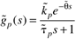
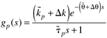
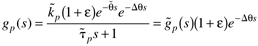
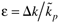
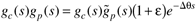
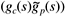
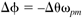

| [ Team LiB ] |
|
7.6 RobustnessWe have noted throughout this text that it is important to tune controllers to be robust. By robust, we mean that a controller can tolerate a certain amount of change in the process parameters without causing the feedback system to go unstable. The gain and phase margins presented in Section 7.5 quantify the amount of uncertainty that can be tolerated. To illustrate the relationship between gain and phase margins and the model parametric uncertainty that can be tolerated, we consider the following first-order + time-delay process. The nominal process model is  Let Dk and Dq represent the additive uncertainty in the process gain and dead time, respectively (notice that we are neglecting any uncertainty in the time constant). The actual process is then  Notice that we could also use the representation  where . The open-loop transfer function used in the frequency response analysis is  Notice that the gain and time-delay uncertainties are clearly separated from the nominal model and controller  in this equation. Since 1 + e is a constant term, it will only affect the amplitude ratio. Also notice that e–Dqs will only affect the phase angle. This means that we can think of the gain margin as being related to the amount of gain uncertainty that can be tolerated, while the phase margin is related to the amount of dead-time uncertainty that can be tolerated. The change in phase angle, Df, due to the change in deadtime, Dq, can be found from  These concepts are shown more clearly in the first-order + dead-time learning module (Module 6). |
| [ Team LiB ] |
|